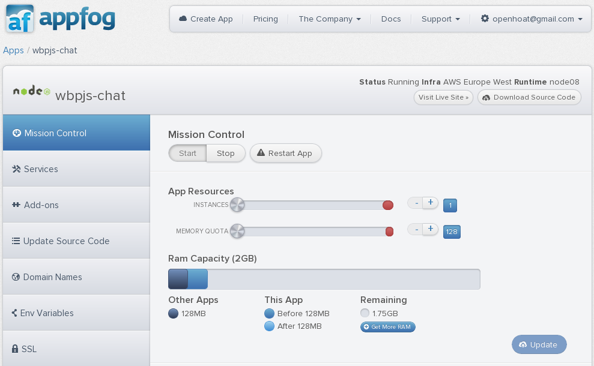

<article>
  <h3>
    Déploiement & clouds
  </h3>
  <ul>
    <li>Déployer une application Node :
      <ul>
        <li>En standalone</li>
        <li>Derrière un front</li>
        <li>Pourquoi pas un front Node...</li>
      </ul>
    </li>
    <li>Cloud :
      <ul>
        <li>Heroku, Nojitsu, AppFog, ...</li>
      </ul>
    </li>
  </ul>
  
</article>
